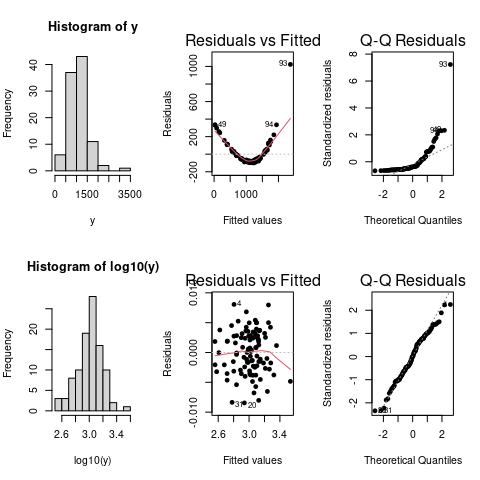
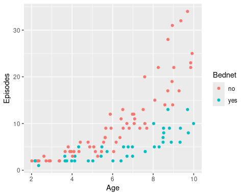
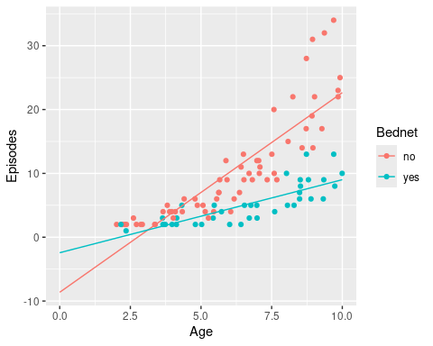
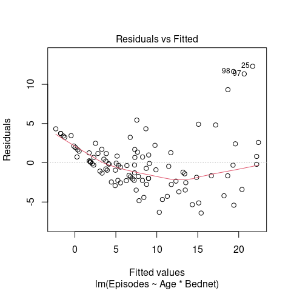
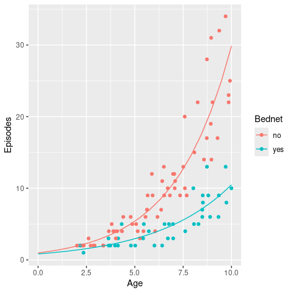
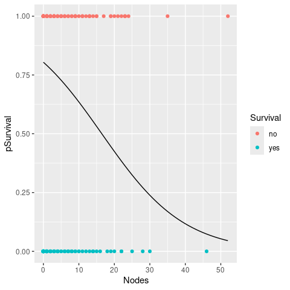

6 Generalised Linear Models (GLM)
In the previous part of this workshop we have seen that linear models are a powerful modelling tool. However, we have to remember that these rely on the following assumptions:
- A linear mean function is relevant
- Variances are equal across all predicted values of the response (homoscedatic)
- Errors are normally distributed
- Samples are collected at random
- Errors are independent
If assumptions 1–3 are violated we can transform our response variable to try and fix this. Common transforms include the log and power (sqrt) transforms but also Tukey’s ladder-of-powers, Box-Cox transformation, or Tukey and Mosteller’s bulging rule. Here is a toy example showing the effect of log transforming (artificial) data on the distribution of the residuals.

However, in a lot of other cases this is either not possible, for example when the output is binary, or we want to explicitly model the underlying distribution, e.g. if we are dealing with count data. In these cases we have to use Generalised Linear Models (GLMs) instead, which allow us to change the error structure of our data by using different link functions.
Generalised Linear Models have:
- a linear mean
- a link function
- an error structure
6.1 Link functions
A link functions is equivalent to an “internal” transformation, which links the mean (regression) function (i.e. the usual \(\beta_0 + \beta_1 x_1 + \beta_2 x_2 + ...\)) to the scale of the observed data. Take for example one of our previous examples of data containing the number of malaria episodes an individual has experienced. There is nothing that constraints our regression model to produce negative values; these, however, are obviously nonsensical. Or, imagine you are interested whether some treatment improves patient outcome, where the response would be a yes or no (which in modelling terms is interpreted as 1 or 0). Again, there is nothing to constrain the model to produce values outside this [0,1] range. And this is what we mean by the scale of the observed data.
Note: The simple linear regression model is a special case of a GLM, i.e.
lm(weight ~ height)is equivalent to
glm(weight ~ height, family=gaussian(link=identity))Compared to the lm() function, the glm() function takes an extra argument family, which identifies the error structure and the link function.
The default link function for the normal (Gaussian) error structure is the identity function (equivalent to no transformation). In fact, we often do not need to specify the link function explicitly and instead use the defaults for the various families. Commonly used error structures and associated link functions are (defaults highlighted in bold)
| Family | Link |
|---|---|
gaussian |
identity |
binomial |
logit, probit or cloglog |
poisson |
log, identity or sqrt |
Gamma |
inverse, identity or log |
quasibinomial |
logit |
quasipoisson |
log |
Don’t worry if this sounds confusing to you. We will go through this in more detail, or rather by means of worked out examples, when we deal with modelling two different types of data: count data and binary data.
\(~\)
6.2 Poisson regression (for count data)
There are many occasions where we encounter count data. Count data have two main characteristics: (1) they are discrete (we cannot have, say, 2.3 occurrences or entities), and (2) are bound below by zero (we cannot have less than 0 occurrences or entities). This needs to be taken into consideration when we are trying to fit statistical models to count data. The probability distribution that has these required properties is the Poisson distribution, and this is the distribution family we will have to specify in our GLM.
6.2.1 Background
Let’s consider a single explanatory variable and omit the indices \(i\), the simple linear regression model is given as \[ \begin{align} Y &= \beta_0 + \beta_1 X + \epsilon\\ \epsilon &\sim \mathcal{N}(\mu,\sigma^2) \end{align} \] which can be rewritten as \[ \begin{align} Y &\sim \mathcal{N}(\mu,\sigma^2)\\ \mu &= \beta_0 + \beta_1 X \end{align} \]
Recall that the mean (regression) function is unconstrained, meaning that the value of \(\beta_0 + \beta_1 X\) can range from \(-\infty\) to \(\infty\). This obviously violated the constraints of count data. Taking the logarithm of the mean transforms this range to \((0, \infty]\), which is what we are after. To to be consistent with the statistics literature we will rename \(\mu\) to \(\lambda\) and thus get the Poisson regression model as: \[ \begin{align} Y &\sim Pois(\lambda)\\ \log \lambda &= \beta_0 + \beta_1 X \end{align} \] Following the rules of logarithms: \[ \begin{align} \log \lambda &= \beta_0 + \beta_1 X \\ \lambda &= e^{\beta_0 + \beta_1 X} \end{align} \] This means that we are effectively modelling the observed count data using an exponential mean function.
6.2.2 Poisson regression in R
Now we know what is behind the Poisson model and understand what link functions do we can concentrate on how to perform Poisson regression in R. For this we use our previous malaria episodes example but with a slightly modified dataset, where we discard the effect of different transmission settings(EIR).
# create random data points for age and EIR
Age <- runif(100, 2, 10)
Bednet <- sample(c('yes', 'no'), 100, replace = T)
# assume there is an interaction between age and bednet use, which influences the number of episodes
episodes <- round(exp(ifelse(Bednet=='no', 0.32*Age, 0.22*Age) + rnorm(100, 0, 0.3)))
# put into new data.frame
epiData <- data.frame(Age = Age, Episodes = episodes, Bednet = factor(Bednet))
# plot data
ggplot(epiData, aes(x = Age, y = Episodes, col = Bednet)) +
geom_point() 
There is a clear relationship between age and the number of recorded episodes, and we might be tempted to fit a linear regression to this data. So let’s do this and then add the regression lines to this graph.
# fit the model wuth lm() and consider an interaction term
fit <- lm(Episodes ~ Age*Bednet, data = epiData)
# make model predictions
newdata <- expand.grid(Age = seq(0,10,length.out=20),
Bednet = c('no', 'yes'))
newdata <- mutate(newdata, Bednet = factor(Bednet))
newdata$Episodes <- predict(fit, newdata = newdata)
ggplot(mapping = aes(x = Age, y = Episodes, col = Bednet)) +
geom_point(data = epiData) +
geom_line(data = newdata)
Now we can start to appreciate the problem with fitting a linear model to count data: the intersects (number of episodes at age 0) are both negative in this case, which is biologically not feasible.
We can also see from the model diagnostics that the residuals do follow the assumptions of a linear model, as there are clear signs of heteroscedasticiy (here indicated by an increasing variance with increasing values of the fitted response variable).
# plot model diagnostics
plot(fit, which = 1)
Now we fit a GLM to the data instead, assuming a Poisson error structure and using the (default) log link function.
# fit data using Poisson regression with default link function
fit_glm <- glm(Episodes ~ Age*Bednet, data = epiData, family = poisson(link = log))
# when using default link functions, we can also call
# fit_glm <- glm(Episodes ~ Age*Bednet, data = epiData, family = "poisson")
# get model summary
summary(fit_glm)##
## Call:
## glm(formula = Episodes ~ Age * Bednet, family = poisson(link = log),
## data = epiData)
##
## Deviance Residuals:
## Min 1Q Median 3Q Max
## -1.61302 -0.59601 -0.08364 0.38847 2.07668
##
## Coefficients:
## Estimate Std. Error z value Pr(>|z|)
## (Intercept) -0.02768 0.15931 -0.174 0.8621
## Age 0.34247 0.02024 16.919 <2e-16 ***
## Bednetyes -0.15752 0.34519 -0.456 0.6482
## Age:Bednetyes -0.08893 0.04355 -2.042 0.0412 *
## ---
## Signif. codes: 0 '***' 0.001 '**' 0.01 '*' 0.05 '.' 0.1 ' ' 1
##
## (Dispersion parameter for poisson family taken to be 1)
##
## Null deviance: 524.198 on 99 degrees of freedom
## Residual deviance: 63.666 on 96 degrees of freedom
## AIC: 438.39
##
## Number of Fisher Scoring iterations: 4At a first glance, the model summary looks very similar to the one based on linear regression. However, instead of information regarding R-squared or the residual standard error, we now have information on the null and residual variance, as well as something called the AIC, which stands for the Akaike Information Criterion and is an estimator of prediction error that takes model complexity into account (for model selection we aim to minimise the AIC).
One thing we need to remember is that we are still working on the log-scale. That is, making a prediction based on our inferred model estimates relies on a back-transformation. For example, to obtain an estimate of the average number of episodes for a 5-year old sleeping under a bednet we have to calculateIn reality we would use the predict() function for this. But beware, as we are dealing with a link function that is not the identity function, we need to set an extra argument type = 'response' to back-transform the predicted values to the scale of our response variable.
# make model predictions
newdata$Episodes <- predict(fit_glm, newdata = newdata, type='response')
ggplot(mapping = aes(x = Age, y = Episodes, col = Bednet)) +
geom_point(data = epiData) +
geom_line(data = newdata)
This looks like a much better fit to the data and also satisfies the necessary condition of a non-negative intersect.
\(~\)
6.3 Logistic regression (for binary data)
So far we have considered continuous and discrete data as the response variables. What if our response is a categorical variable, such as successful treatment / treatment failure or infected / protected? In this case we can model the probability p of being in one class or another as a function of the explanatory variables. Here we will only consider binary response data, i.e. where the response is one of two types. In this case we talk about binomial or simply logistic regression. Cases where the outcome has more than two levels we talk about multinomial regression; this, however, will not be considered here.
6.3.1 Background
Recall the previous case of dealing with count data. We noted that the mean function \(\beta_0 + \beta_1 X\) is unconstrained and thus needs to undergo internal transformation to make sure it fit the characteristic of count data. For a binary outcome, the restriction on the modelled response is that is needs to be within the range [0,1] because we are dealing with probabilities. A probability distribution that works for this is the Bernouille distribution, which has the following characteristics \[ Y \sim \mathcal{Bern}(P) \]
- binary variable, taking the values 0 or 1 (yes/no, pass/fail)
- a probability parameter, \(p\), where \(0<p<1\)
- mean = \(p\)
- variance = \(p(1-p)\)
Remember that for the case of count data (Poisson regression), we took the exponential of the mean function, or rather modelled the modeled the logarithm of the response. In the case of binary data, we are trying to model the probability, which has values between 0 and 1. Note that the possible range of \(p/(1-p)\) is \((0,\infty)\), such that \(\log p/(1-p) \in (-\infty,\infty)\), which is exactly what we want. This function is called logit and also known as log odds. Our regression model therefore becomes
\[ \begin{align} Y &\sim \mathcal{Bern}(P) \\ \log\left(\frac{p}{1-p}\right) &= \beta_0 + \beta_1 X \end{align} \] Again, note that we are still fitting straight lines through our data, but this time in the log odds space. As a shorthand notation we write \(\log\left(\frac{p}{1-p}\right) = \text{logit}(p) = \beta_0 + \beta_1 X\).
6.3.2 Logistic regression in R
In order to show how to perform logistic regression we will use Haberman’s Survival Data, which contains data from a study conducted between 1958 and 1970 at the University of Chicago’s Billings Hospital on the survival of patients who had undergone surgery for breast cancer. Our dataset contains data from 306 patients and has four columns:
Age: age of the patient at the time of the operationYear: year of the operationNodes: number of positive axillary nodes detectedSurvivial: survival status (1 = survived for more than 5 years, 2 = died within 5 years)
haberman <- read.csv('haberman.csv')
head(haberman)## Age Year Nodes Survival
## 1 30 1964 1 1
## 2 30 1962 3 1
## 3 30 1965 0 1
## 4 31 1959 2 1
## 5 31 1965 4 1
## 6 33 1958 10 1As you will notice, Survival is currently treated like a numerical variable, so the first thing we need to do is turn this into a categorical one, which indicates whether the patient survived for more than 5 years or not
haberman <- mutate(haberman, Survival = factor(ifelse(Survival==1, 'yes', 'no')))Our intuition would be that the predictor variables of interest are Age and Nodes; so let’s see how they relate with survival.
Age and Nodes stratified by Survival.


\(~\)
From these graphs it is difficult to say if and by how much these variables had an influence on patient survival. But we cannot always trust our eyes so we are going to test this statistically by means of logistic regression. The syntax should be very familiar to you by now. In fact, the only argument we need to change from the previous GLM is to set the family to binomial and the link to logit (although this is not strictly necessary as it is the default link for this family).
fit_bin <- glm(Survival ~ Age + Nodes, data = haberman, family = binomial(link='logit'))
summary(fit_bin)##
## Call:
## glm(formula = Survival ~ Age + Nodes, family = binomial(link = "logit"),
## data = haberman)
##
## Deviance Residuals:
## Min 1Q Median 3Q Max
## -1.9741 -0.9178 0.6547 0.7302 2.3361
##
## Coefficients:
## Estimate Std. Error z value Pr(>|z|)
## (Intercept) 2.46290 0.70643 3.486 0.00049 ***
## Age -0.01965 0.01269 -1.549 0.12144
## Nodes -0.08832 0.01982 -4.456 8.34e-06 ***
## ---
## Signif. codes: 0 '***' 0.001 '**' 0.01 '*' 0.05 '.' 0.1 ' ' 1
##
## (Dispersion parameter for binomial family taken to be 1)
##
## Null deviance: 353.69 on 305 degrees of freedom
## Residual deviance: 328.31 on 303 degrees of freedom
## AIC: 334.31
##
## Number of Fisher Scoring iterations: 4This suggests that patient age is not a statistically significant predictor of patient survival. We can also test this directly by comparing models with and without this predictor using anova
fit_bin_b <- glm(Survival ~ Nodes, data = haberman, family = binomial(link='logit'))
anova(fit_bin, fit_bin_b, test = "Chisq")## Analysis of Deviance Table
##
## Model 1: Survival ~ Age + Nodes
## Model 2: Survival ~ Nodes
## Resid. Df Resid. Dev Df Deviance Pr(>Chi)
## 1 303 328.31
## 2 304 330.72 -1 -2.4132 0.1203This confirms that there is no statistical significant effect of Age, so we will drop this explanatory variable and proceed with the less complex model. Let’s have a look at the model summary
summary(fit_bin_b)##
## Call:
## glm(formula = Survival ~ Nodes, family = binomial(link = "logit"),
## data = haberman)
##
## Deviance Residuals:
## Min 1Q Median 3Q Max
## -1.8058 -0.9505 0.6602 0.6861 2.2845
##
## Coefficients:
## Estimate Std. Error z value Pr(>|z|)
## (Intercept) 1.41250 0.16297 8.667 < 2e-16 ***
## Nodes -0.08577 0.01955 -4.387 1.15e-05 ***
## ---
## Signif. codes: 0 '***' 0.001 '**' 0.01 '*' 0.05 '.' 0.1 ' ' 1
##
## (Dispersion parameter for binomial family taken to be 1)
##
## Null deviance: 353.69 on 305 degrees of freedom
## Residual deviance: 330.72 on 304 degrees of freedom
## AIC: 334.72
##
## Number of Fisher Scoring iterations: 4How do we interpret the model summary, and in particular the variable estimates. Remember that we are now working on the logit scale, and to make predictions about the probability of a patient surviving for more than 5 years we have to use the back-transform \[ \begin{align} \text{logit } p &= \beta_0 + \beta_1 X \\ \Rightarrow p &= \text{logit}^{-1} \beta_0 + \beta_1 X = \frac{e^{\beta_0 + \beta_1 X}}{1 + e^{\beta_0 + \beta_1 X}} \end{align} \\ \]
- Calculate the probability of survivial for a patient with 3 positive axillery nodes.
- Calculate the decrease in the probability of survival for one additional positive node.
\(~\)
The next thing we would like do is to plot the regression line. As before this involves making a new dataset for prediction and then add this to our graph of survival vs. nodes. Also, we need to make sure that the original response variable (Survival) is projected onto the same probability scale 0 to 1.
newdata <- data.frame(Nodes = seq(min(haberman$Nodes), max(haberman$Nodes)))
newdata$pSurvival <- predict(fit_bin_b, newdata = newdata, type = 'response')
haberman2 <- mutate(haberman, pSurvival = ifelse(as.numeric(Survival)==1, 1, 0))
ggplot(mapping = aes(x = Nodes, y = pSurvival)) +
geom_point(data = haberman2, aes(col = Survival)) +
geom_line(data = newdata)
Odds ratios
Another, and sometimes more and sometimes less intuitive interpretation of the coefficients of a logistic regression model is in terms of odds ratios:
Odds: \[ \frac{P(\text{event happens})}{P(\text{event does not happen})} = \frac{P(\text{event happens})}{1 - P(\text{event happens})}\]
Odds ratio: \[ \frac{\text{odds in one group}}{\text{odds in another group}} \]
From the previous task we could for example calculate the odds ratio (of survival) in individuals with 3 detected nodes compared to 2 detected nodes, which will leave to the interested reader to work out. It turns out that if you take the log of the odds ratio you will recover \(\beta_1\), i.e. \(e^{\beta_1}\) is the odds ratio for a unit increase.
As mentioned earlier, odds ratio are tricky to understand but generally make more sense and are easier to interpret for categorical variable than for numerical ones.